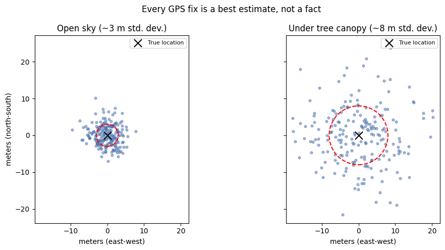

4. Acquiring Geospatial Data#
4.1. GISS/GEOG 361/363: Introduction to Geographic Information Science — Week 4 Lecture Notes#
Unit 4: Acquiring Geospatial Data — authoritative and cloud-hosted sources · field-collected data · data quality and uncertainty · whose knowledge counts as data
Read this before you open Lab 3. It gives you the ideas behind the choices you’ll make about where your data comes from, and what it means to trust it.
4.2. Welcome Back#
Last week we ended on a warning box — “this layer appears to have no projection specification” — and I told you Lab 2 would have you make that call for real. This week starts one step earlier than that warning box, at the moment before you even have a layer to load.
Every dataset you will ever open in QGIS or ArcGIS Pro had to come from somewhere. Someone — a federal agency, a state government, a volunteer mapper, a satellite, or you, standing in a field with a phone — decided what to measure, how to measure it, and what to leave out. That decision happened long before the data reached your screen, and it shapes everything you can honestly say with it afterward.
So here’s a quick thought experiment before we dig in. Picture two maps of the same trail network out in the Gila National Forest — one built from official federal survey records, one built by volunteers walking the trails with a phone in hand. Would you expect those two maps to agree? My guess is you already suspect they wouldn’t, and you’d be right. We’ll come back to exactly why in a few minutes.
Same place as always — Silver City, Grant County, the Gila. This week, the question is where the data itself came from, and whose knowledge of this place made it into the dataset at all.
4.3. Learning Goals#
By the end of this lecture, you will be able to:
Distinguish authoritative/cloud-hosted data sources from field-collected data, and describe a workflow for each
Identify core dimensions of data quality — positional accuracy, attribute accuracy, completeness, currency, and lineage
Explain uncertainty as a built-in property of spatial data, not a flaw to be eliminated
Read and use metadata to evaluate whether a dataset fits a given task
Connect data acquisition to data sovereignty — whose knowledge of a place counts as data, and whose is missing
Enduring understandings worth carrying past this week:
Where geospatial data comes from, and who licenses or authorizes it, shapes whose data — and whose analysis — is possible.
GIS is never neutral. Every choice in data, analysis, and representation can support or harm real people and places.
Critical cartography and data sovereignty ask a sharper version of that question: whose knowledge of a place counts as data, who controls it once it’s collected, and what is lost from an analysis when local or community knowledge isn’t part of the dataset.
This lecture does not require any software. Lab 3, right after this, is where you’ll acquire data both ways yourself — one authoritative or cloud-native download, and one small field-collected dataset.
4.4. Lecture Slides and Recording#
If you’d rather click through slides or watch/listen instead of reading straight through, use either of these — they cover the same material as the sections below. Everything required for Lab 3 is also here in text, so both are optional.
Slides: (link/embed goes here once posted — see the instructor note in the code cell below for how to get a working embed URL)
Recording: (link/embed goes here once posted — same note applies)
A captioned or transcript version of the recording will also be posted for anyone who needs or prefers it — reach out if it isn’t up yet and you need it before it is.
# OPTIONAL -- embed a Google Slides deck directly in this notebook.
#
# Instructor note: the normal "Share" link will NOT embed correctly. Instead:
# File -> Share -> Publish to web -> Embed -> copy the <iframe src="..."> URL.
# It will look like: https://docs.google.com/presentation/d/e/2PACX-.../embed?start=false&loop=false
#
# Paste that URL below in place of the placeholder.
from IPython.display import IFrame
slides_url = "PASTE_YOUR_PUBLISH_TO_WEB_EMBED_URL_HERE"
IFrame(src=slides_url, width="100%", height=480)
# OPTIONAL -- embed the lecture recording.
#
# Instructor note: the embed URL format depends on where the recording is hosted.
# - YouTube (unlisted is fine): https://www.youtube.com/embed/VIDEO_ID
# - Panopto: use the "Embed" option in the share menu -- it gives an <iframe> URL directly
# - Kaltura: use the "Publish" / "Embed" option in the share menu
# - Zoom cloud recording: Zoom's share links do not embed reliably -- link out instead
# of embedding (see the markdown cell above), or re-host on YouTube/Panopto first.
#
# Paste the correct embed URL below in place of the placeholder.
from IPython.display import IFrame
recording_url = "PASTE_YOUR_RECORDING_EMBED_URL_HERE"
IFrame(src=recording_url, width="100%", height=400)
If either embed above doesn’t load, that’s expected until a real URL replaces the placeholder — and even with a real URL, some notebook environments (Colab, some JupyterHubs) block embedded pages. In that case, use the direct links above the code cells instead.
4.5. 1. Two Ways to Get Data#
Let’s go back to that trail comparison from a minute ago. If you want to try it yourself later, pull up OpenStreetMap and the USGS National Map Viewer side by side and zoom in on the Gila, west of Silver City. You’ll notice the trail networks don’t quite match — different trails show up, different levels of detail, different currency. That’s not a bug in either map. It’s because they were built through two completely different pipelines.
Authoritative and cloud-hosted sources. Most of the data you’ll use in this course — and in most professional GIS work — comes from an authoritative source: a government agency, research institution, or standards body that collects, maintains, and publishes geospatial data as part of its mission.
Source type |
Examples |
Typical strengths |
Typical limits |
|---|---|---|---|
Federal agencies |
USGS National Map, US Census TIGER/Line, USDA/NRCS, USFS |
Broad coverage, documented methodology, long-term consistency |
Update cycles can lag; national datasets sometimes generalize local detail away |
State/regional clearinghouses |
New Mexico RGIS, county GIS departments |
Finer local detail than national layers |
Coverage and quality vary a lot agency to agency |
Cloud-native/cloud-hosted platforms |
Microsoft Planetary Computer, AWS Open Data, Google Earth Engine catalogs |
Massive scale, frequently updated, ready to stream without a full download — recall Week 2’s cloud-native formats |
Requires some technical comfort; licensing and update cadence still need checking per dataset |
Crowdsourced/volunteered |
OpenStreetMap, iNaturalist, community mapping projects |
Often more current in well-traveled areas; reflects lived, on-the-ground knowledge |
Coverage depends entirely on who contributed — gaps exactly where contributors are scarce |
That last row is why the OpenStreetMap trails looked different from the National Map trails. OSM is built by whoever shows up to map something — which makes it current where people are actively hiking and mapping, and thin exactly where they aren’t. “Authoritative” doesn’t mean “perfect.” It means the data has a traceable, accountable origin, which is exactly what makes it possible to evaluate — more on that in a few minutes.
Field-collected data. Sometimes the data you need doesn’t exist yet — nobody has mapped that trail, that fence line, that patch of an invasive plant, or that flood-damaged culvert. That’s when you collect it yourself. There are three stages to this, and it’s worth doing them in order:
Plan — decide what you’re recording (points, lines, or polygons?) and what attributes matter (a name? a condition rating? a photo? a timestamp?) before you’re standing in the field.
Collect — walk, drive, or hike the area, logging coordinates with a GPS-enabled app. Avenza Maps, Gaia GPS, and even Google My Maps on a phone all do this, with different tradeoffs in offline capability, precision, and export options.
Export and integrate — get your points, lines, or polygons out of the app and into a GIS-ready format, most commonly GeoJSON, so they can be layered against authoritative data in QGIS or ArcGIS Pro.
This is exactly what Lab 3 has you do: acquire a dataset each way, then bring both into the same map.
Field-collected data isn’t automatically less trustworthy than authoritative data — a fresh field observation can be more current and more locally accurate than an agency layer that hasn’t been updated in a decade. But it inherits a different set of limitations: consumer GPS accuracy, whatever the collector chose to record (and didn’t), and the fact that one person’s field day covers a lot less ground than a statewide agency survey.
4.6. 2. A First Look: Reading a Dataset’s Metadata#
So if a source’s strengths and limits vary this much, how do you actually check which you’re dealing with for a specific dataset? You read its metadata — the documentation that travels (or should travel) alongside the data itself.
Let’s pull one up together. Open the USGS National Map Viewer or the New Mexico RGIS Clearinghouse, and pick any layer covering Grant County — a hydrography layer, a land ownership layer, a trails layer, doesn’t matter which. Most download pages or catalog listings have a metadata link or an “i” info icon. Once you find it, there are four things worth looking for every time:
When was this data collected or last updated?
Who produced it, and what method did they use — survey, aerial photo interpretation, volunteered/crowdsourced submission?
What scale or resolution was it built for?
Is there a stated accuracy figure — positional accuracy in meters, or a completeness statement?
Go ahead and try this on your own after lecture with a layer relevant to your project. Was the metadata easy to find, or did you have to dig for it? Would you have trusted this layer’s currency and accuracy if you hadn’t checked? Metadata is often the least glamorous part of a dataset, and the part most people skip — which is worth sitting with for a second, because skipping it means trusting a dataset you haven’t actually evaluated.
4.7. 3. What Makes Data “Good”?#
“Is this dataset any good?” is really five narrower questions stacked together. Knowing the five lets you actually answer the real question instead of just trusting a label:
Dimension |
What it asks |
Field-based analogy |
|---|---|---|
Positional accuracy |
How close is the recorded location to the true location on the ground? |
Did your GPS pin land on the actual trailhead, or 15 meters into the trees? |
Attribute accuracy |
Are the descriptive values (a name, a species, a road type) correct? |
You logged this culvert as “functional” — was it, when you checked? |
Completeness |
Does the dataset include everything it claims to, with nothing missing or extra? |
Did you log every water crossing on the route, or just the ones you noticed? |
Currency |
How recently was this collected or updated, and does that matter for your use? |
A 2015 land-cover layer may be badly out of date after 2022’s Black Fire. |
Lineage |
What is the documented history of how this data was collected, processed, and by whom? |
Can you trace your field points back to the exact day, device, and method used? |
Notice that a dataset can be excellent on one of these and weak on another — high positional accuracy but poor currency, or complete but with unreliable attributes. That’s why “good data” always really means good for a specific purpose, not good in some absolute sense. Keep that phrase in your back pocket; you’ll use it constantly this semester.
4.8. 4. Uncertainty Is Not a Bug#
Every measurement of the real world carries some uncertainty. A GPS reading is a best estimate, not a perfect fact — even a professionally surveyed boundary has a documented margin of error. The goal in GIS is never to eliminate uncertainty entirely; it’s to know how much there is, and whether it matters for what you’re doing.
A consumer smartphone GPS is typically accurate to somewhere in the 3–8 meter range under open sky, and worse under tree canopy or in a canyon — both conditions you’ll run into constantly around the Gila. That’s more than good enough for marking a trailhead on a community map. It is not good enough for surveying a legal property boundary. Same tool, same technology, wildly different fitness depending on the task. There’s a demo at the very end of this notebook that shows exactly what that spread of GPS points actually looks like, if you want to see it visually.
This is also where last week’s material comes back around: a dataset’s stated accuracy is only meaningful relative to a known datum. “Accurate to 5 meters” is a different claim depending on whether that’s relative to WGS84 or a decades-old NAD27 survey — the same mismatch that triggered that “no projection specification” warning box from Week 3.
4.9. 5. Whose Knowledge Counts as Data?#
Every dataset in this lecture so far — federal, state, crowdsourced, or field-collected by you — was built by someone, using their definitions of what counted as worth recording. That’s not a flaw unique to any one source. It’s true of authoritative data too.
Go back to that trail comparison one more time. A federal trail dataset might be built entirely from official survey and maintenance records — which means a trail that a local community has used for generations, but that was never formally adopted into the agency’s system, simply isn’t there. It isn’t wrong, exactly. It’s incomplete in a specific, patterned way: it reflects whose use of the land was institutionally recognized, and whose wasn’t.
That’s the core question behind data sovereignty and critical cartography: who controls a dataset once it’s collected, and what — and whose — knowledge of a place gets left out when “the data” only means what made it into a government or corporate system? Community knowledge — oral history, informal trail networks, lived experience of where flooding actually happens versus where a model predicts it — is legitimate geographic information, even when it never shows up in an authoritative layer. This course treats it that way: your final inquiry project can draw on interviews, oral history, or informal local maps as data alongside your GIS layers, documented in whatever format best preserves them.
This week’s discussion board picks this thread up directly — you’ll be asked where your own project’s data comes from, who made it, and what assumptions are built in, plus what’s missing from a community perspective that a formal dataset wouldn’t capture on its own.
4.10. 6. Choosing Sources for Your Own Project#
So how does all of this actually play out when you’re building your own inquiry project? A useful two-question shortcut, whichever project you’re working on:
What already exists? Check federal, state, and cloud-hosted sources first — USGS, Census, RGIS, Planetary Computer. Building from scratch what someone has already collected and documented is rarely a good use of your time.
What’s missing — and who would know it? If the gap is a physical feature, plan a small field collection. If the gap is local knowledge that was never going to appear in an agency dataset in the first place — a community’s name for a place, an informal trail, a lived account of where a hazard actually occurs — that’s a data sovereignty gap, not a field-collection gap, and it calls for a different method: an interview, a conversation, a documented account.
Scenario |
Likely best source |
Why |
|---|---|---|
Mapping regional land ownership near Silver City |
Authoritative (RGIS, USFS, BLM) |
Comprehensive, standardized, legally grounded |
Tracking a fast-changing wildfire perimeter |
Cloud-hosted (FIRMS hotspots, Sentinel-2 via Planetary Computer/GEE) |
Needs to be current within days, not years |
Documenting an undocumented trail or a specific site condition |
Field-collected (Avenza, Gaia, phone GPS) |
Doesn’t exist in any authoritative dataset yet |
Capturing a community’s own history or use of a place |
Community-engaged (interviews, oral history, informal local maps) |
Was never going to be in a formal GIS dataset — the gap is who was asked, not what was surveyed |
Most real projects — including yours — end up pulling from more than one of these at once. Naming which method you used for which piece, and why, is itself part of good documentation, and it’s exactly the kind of thing your e-portfolio should make visible.
4.11. 7. Getting Ready for Lab 3#
A few things to know before you open the lab notebook:
You’ll acquire data two ways — download an authoritative or cloud-native dataset (for example, a GeoParquet file, or a Census/USGS layer), and collect a small field dataset yourself using a GPS app (Avenza, Gaia, or Google My Maps).
You’ll export your field data to GeoJSON, so it can sit alongside your downloaded layer in the same GIS project.
You’ll symbolize both layers and produce a simple map, applying Week 2’s symbology skills to data you sourced yourself.
Keep this week’s two-question shortcut handy: what already exists authoritatively, and what’s missing — and is that gap a field-collection gap or a whose-knowledge-counts gap?
Keep last week’s habit going too: check the CRS and datum of anything you download before assuming it lines up with anything else.
This week’s data feeds Discussion 1 — Data & Representation — where you’ll reflect on where your own project’s data comes from, who made it, and what’s missing from a community perspective.
4.12. Before You Move On: Quick Reflection#
Take two minutes with these — you’ll expand on them in Lab 3 and Discussion 1, so a rough first pass is all you need here.
Pick one dataset you expect to use this semester. What do you actually know about where it came from, and what would you still need to check?
Of the five data quality dimensions — positional accuracy, attribute accuracy, completeness, currency, lineage — which one matters most for your project, and why?
Is there knowledge about your project’s place that you suspect would never show up in an authoritative dataset? Who would you need to talk to in order to capture it?
Your answers (double-click this cell to edit):
4.12.1. 📎 Resources#
USGS National Map Viewer — authoritative federal topographic, imagery, and hydrography data — https://apps.nationalmap.gov/viewer/
New Mexico RGIS Clearinghouse — state and regional GIS data for New Mexico — https://rgis.unm.edu/
OpenStreetMap — volunteered/crowdsourced global base map data — https://www.openstreetmap.org/
Microsoft Planetary Computer — cloud-hosted, cloud-native environmental datasets — https://planetarycomputer.microsoft.com/
Avenza Maps, Gaia GPS, Google My Maps — field GPS data collection apps used in Lab 3
US Census Bureau TIGER/Line — authoritative boundary and demographic geography — https://www.census.gov/geo
CARE Principles for Indigenous Data Governance — Global Indigenous Data Alliance — https://www.gida-global.org/care
D’Ignazio, C. & Klein, L. (2020). Data Feminism — data-feminism.mit.edu (course GeoEthics strand reading)
4.13. Summary#
Getting spatial data into a GIS takes a decision most people never think to question: where did this come from? Authoritative and cloud-hosted sources — federal agencies, state clearinghouses, cloud-native platforms, and crowdsourced projects like OpenStreetMap — each offer broad, documented, often free data, but each carries its own coverage gaps, update cadence, and blind spots. When the data you need doesn’t exist yet, field collection with a GPS app fills that gap, at the cost of covering far less ground and inheriting consumer-GPS-level positional accuracy.
Whichever path a dataset takes, its usefulness comes down to five separable questions — positional accuracy, attribute accuracy, completeness, currency, and lineage — and reading a dataset’s metadata is how you answer them instead of guessing. Every dataset also carries some amount of uncertainty, which isn’t a flaw to eliminate but a property to know and account for relative to your task.
None of this is only technical. Every dataset — authoritative or crowdsourced, federal or field-collected by you — reflects a decision about whose knowledge of a place counted as worth recording, and whose didn’t. That’s the heart of data sovereignty and critical cartography: asking not just is this data accurate, but who got to decide what counted as data here in the first place — a question this week’s discussion board asks you to sit with directly, using your own project’s data.
You’re ready for Lab 3.
4.14. Appendix: Two Optional Interactive Demos#
Everything above this line is all you need for this week. The two cells below are optional extras — small, self-contained demos of ideas from this lecture, built in Python. Skip them, come back later, or run them now if you’re curious. Nothing here is graded.
# OPTIONAL -- a simple illustration of GPS positional uncertainty (Section 4).
# No real data or extra installs needed -- matplotlib and numpy are enough.
import matplotlib.pyplot as plt
import numpy as np
np.random.seed(13)
# Simulate 200 GPS "fixes" for a single stationary point -- e.g., someone standing
# still at a trailhead near Silver City, phone logging a position every few seconds.
true_x, true_y = 0, 0
open_sky_std = 3.0 # meters, open sky -- typical smartphone accuracy
canopy_std = 8.0 # meters, under tree canopy -- degraded accuracy
open_sky_fixes = np.random.normal(0, open_sky_std, (200, 2))
canopy_fixes = np.random.normal(0, canopy_std, (200, 2))
fig, axes = plt.subplots(1, 2, figsize=(11, 5), sharex=True, sharey=True)
for ax, fixes, std, title in zip(
axes,
[open_sky_fixes, canopy_fixes],
[open_sky_std, canopy_std],
["Open sky (~3 m std. dev.)", "Under tree canopy (~8 m std. dev.)"],
):
ax.scatter(fixes[:, 0], fixes[:, 1], s=12, alpha=0.5, color="#4C72B0")
ax.scatter([0], [0], s=120, color="black", marker="x", label="True location")
circle = plt.Circle((0, 0), std, fill=False, color="red", linestyle="--", linewidth=1.5)
ax.add_patch(circle)
ax.set_title(title)
ax.set_xlabel("meters (east-west)")
ax.set_aspect("equal")
ax.legend(loc="upper right", fontsize=8)
axes[0].set_ylabel("meters (north-south)")
plt.suptitle("Every GPS fix is a best estimate, not a fact")
plt.tight_layout()
plt.show()
print("Every point above is a separate GPS reading of the exact same stationary spot.")
print("None of them are 'wrong' individually -- the spread itself is the uncertainty.")
print("This is why a single field point should be read as 'somewhere in this circle,'")
print("not as a single exact coordinate -- especially under canopy in the Gila.")

Every point above is a separate GPS reading of the exact same stationary spot.
None of them are 'wrong' individually -- the spread itself is the uncertainty.
This is why a single field point should be read as 'somewhere in this circle,'
not as a single exact coordinate -- especially under canopy in the Gila.
# OPTIONAL -- a tiny interactive data-source chooser for Section 6.
# Uses ipywidgets, which ships with most Jupyter/Colab environments already.
# If it's missing, uncomment the line below:
# !pip install ipywidgets -q
import ipywidgets as widgets
from IPython.display import display
scenarios = {
"Mapping regional land ownership":
"Authoritative source (RGIS, USFS, BLM). Priority: comprehensive, standardized, legally grounded.",
"Tracking a fast-moving wildfire perimeter":
"Cloud-hosted source (FIRMS hotspots, Sentinel-2). Priority: currency -- data from the last few days, not years.",
"Documenting an undocumented trail or site condition":
"Field collection (Avenza, Gaia, phone GPS). Priority: it doesn't exist in any dataset yet -- you have to make it.",
"Capturing a community's history or use of a place":
"Community-engaged method (interviews, oral history, informal maps). Priority: whose knowledge counts as data -- not a field-collection gap at all.",
}
dropdown = widgets.Dropdown(options=list(scenarios.keys()), description="Task:")
output = widgets.Output()
def on_change(change):
with output:
output.clear_output()
print(scenarios[change["new"]])
dropdown.observe(on_change, names="value")
display(dropdown, output)
with output:
print(scenarios[dropdown.value])
That’s it for Week 4 lecture notes. When you’re ready, head to Lab 3 and go acquire some data of your own – one download, one field collection.